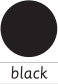
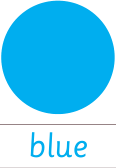
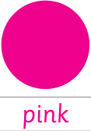
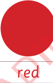
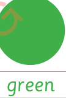
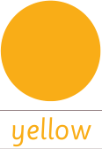
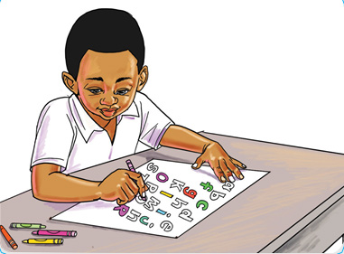

Colouring letters, numbers and things.
There are different types of colours
Every colour has a name.
Observe these colours:

Black

Blue

Pink

Red

Green

Yellow
Colouring letters
Colours make things look good. We can colour letters and numbers. Colouring makes numbers, letters and other things look good.
